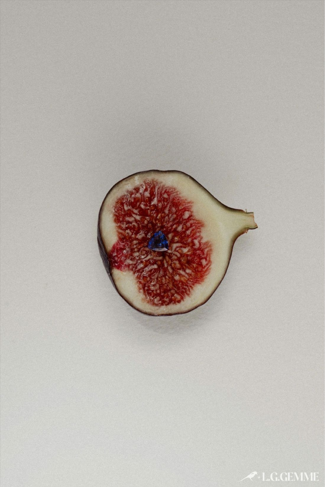

Pornografia  A Pornografia: Uma Análise de Seu Impacto Danoso na Sexualidade e nos Direitos de Gênero 25 de outubro de 2025
Gênero Gênero como Aspecto Hierárquico na Obra "O Segundo Sexo"de Simone de Beauvoir 25 de outubro de 2025
Feminilidade A Construção Social da Feminilidade: Um Estudo Através do Tempo 25 de outubro de 2025
Sociedade Teoria das Janelas Quebradas: O Impacto das Pequenas Falhas, e a Relação com a Criminalidade e Desigualdade Social 28 de outubro de 2025
Direito O direito não socorre aos que dormem, mas... E quem não dorme, só não tem acesso à informação? 28 de outubro de 2025
Imigração A Instrumentalização dos Direitos das Mulheres na União Europeia como Bode Expiatório para Políticas Anti-Imigratórias 29 de outubro de 2025
Violência Reflexões sobre a violência policial e a responsabilidade individual. O meio influencia mas não determina 03 de novembro de 2025